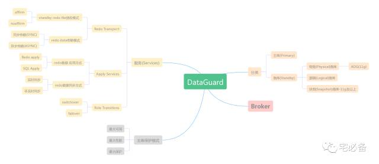
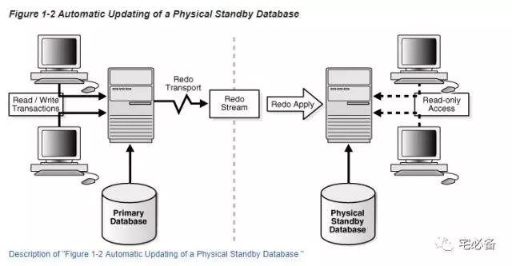
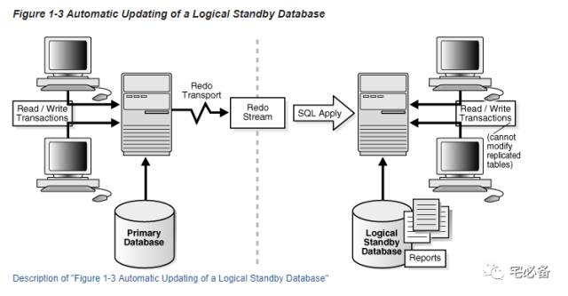

Oracle Data Guard 概念介绍
从这期开始讲Oracle Data Guard方面的内容，先讲基本的概念，然后介绍如何搭建Data Guard
Data Guard作为Oracle提供的一个高可用及灾备解决方案,理解并可以实施它对于DBA来说是非常重要套的技能
首先介绍一下有关Data Guard的概念
一张思维导图

1.Data Guard 相关类型
1.1 主库(Primary Database)
指的是我们的生产环境，我们需要新建Data Guard来保护主库的高可用性
主库可以既可以是单节点实例或者RAC实例
1.2 备库(Standby Databases)
备库是主库的一个完整拷贝，在一个Data Guard环境中可以有最多30个备库
备库建立后Data Guard 自动从主库传输日志文件并应用
备库可以既可以是单节点实例或者RAC实例
备库分为如下
1.2.1 物理备库(Physical standby database)
物理备库要求备库的物理结构和主库一致，包括数据文件，schema以及索引
物理备库通过应用从主库传过来的redo数据进行同步
11g开始物理备库提供 Active Data Guard 功能可以使物理备库可以在open read only的状态也可以应用日志
1.2.2 逻辑备库(Logical standby database)
只要求和主库保持逻辑信息一致
物理备库通过应用从主库传过来的SQL语句进行同步
1.2.3 快照备库(Snapshot Standby Database)
快照备库是个可以更新的备库
和其他备库一样它接收从主库来的日志，但是不会应用它
除非被转换成物理备库，这时所做的操作会全部取消
2. Data Guard 服务
Data Guard提供以下三种服务确保功能的实现:
2.1 Redo传输服务(Redo Transport Services)
该服务有如下功能:
-
控制redo 数据(online 和archive)如何传输到一个或多个备库路径
-
检查损坏或者丢失的归档日志文件并自动从主库或者其他备库获取
2.2 应用服务(Apply Services)
该服务负责应用从主库传输过来的数据，
物理备库应用的是redo 数据

逻辑备库应用的是SQL语句

2.3角色转换服务(Role Transitions)
该服务负责将主库转换为备库或者从备库到主库
其使用switchover和failover 方法
switchover为主动的做角色转换，首先将主库切换到备库，然后将原来的备库切换至主库角色
failover为当主库出现故障时将备库切换至主库
3. Data Guard Broker
其主要功能是监控Data Guard状态，当主库异常时自动切换角色
4. Data Guard 保护模式
Data Guard 保护模式 指的是主库的保护模式，在主库上执行命令
4.1 最大可用模式(Maximum Availability)
该模式分为2个阶段:
-
当备库连接正常时,该模式首先确保主库的redo数据传输到备库
-
如备库无法连接，也不会影响主库的操作，待备库恢复后继续同步
4.2 最大性能模式(Maximum Performance)
该模式下主库不用等待redo数据传输到备库即可完成操作,此为默认模式
4.3 最大保护模式(Maximum Protection)
该模式下需要主库将redo数据传输到备库后才可完成操作
如备库无法访问，则会导致主库无法使用
该模式下备库无法正常关闭，应先关闭主库
5. Data Guard 同步模式
Data Guard 同步模式指的是备库的同步模式，在备库上执行命令
5.1 实时同步
该模式下备库实时应用主库的操作，要求建立standby redo log
5.2 非实时同步
该模式下备库不会实时应用主库的操作，应用时机分为以下两种：
-
如建立standby redo log ，应用发生在主库切换日志的时候，这时备库也会同步切换日志
-
如未建立standby redo log，应用发生在主库归档日志传输到备库时
-
非实时同步也可设定延迟同步，如延迟2小时同步，这时主库传输过来的日志会先归档处理
6.其他的一些概念
redo 数据(redo Data)
Data Guard 主库传输的的redo数据包括 online redo log 以及archive redo log
如备库未建立standby redo log，则会传输archive redo log至备库
standby redo log
standby redo log是备库用来接收主库传过来的online redo 数据的
最大性能模式下是可选的
但Oracle强烈建议无论什么模式都需要建立standby redo log，原来后面介绍
ADG
Oracle 11g提供的新功能
可以使物理备库在只读的状态下同时应用redo数据
好了，关于Data Guard相关的概念就这么多了，下面的一节将介绍基本参数